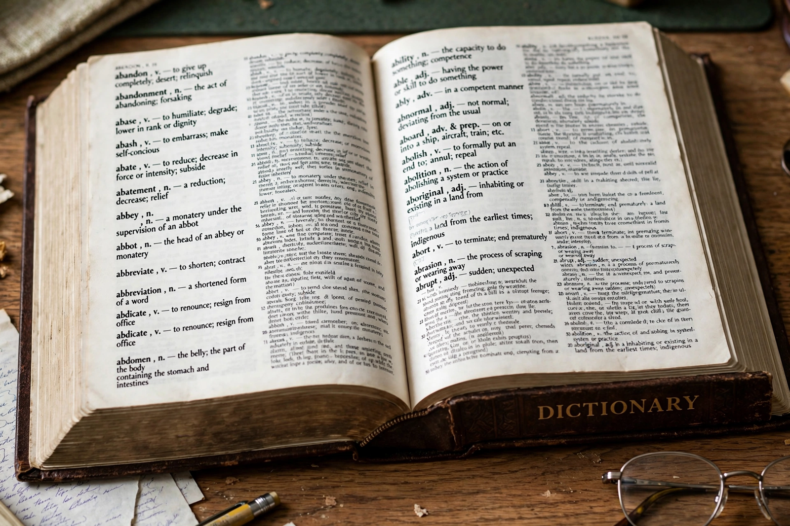

Dictionary

A dictionary is a listing of the words of a language, usually in alphabetical order, with information about their meanings, pronunciations, spellings, origins and usage. The study and making of dictionaries is lexicography. Word lists are among the oldest texts in the world — bilingual Sumerian–Akkadian lists from Mesopotamia date to the second millennium BCE — and glossaries accompanied Sanskrit, Greek and Latin learning throughout antiquity and the Middle Ages.
Milestones
For English, Robert Cawdrey's Table Alphabeticall (1604) was the first monolingual dictionary; Samuel Johnson's Dictionary of the English Language (1755) set the standard for nearly a century; Noah Webster's American Dictionary (1828) fixed distinctively American spellings; and the Oxford English Dictionary (begun 1857, first edition completed 1928) introduced the historical method, tracing each word's usage through dated quotations. Modern lexicography is corpus-based: editors analyse billions of words of real text, and most consultation is now online or in apps.
Types
Beyond general dictionaries there are bilingual and learners' dictionaries, pronouncing dictionaries, etymological dictionaries, slang and dialect dictionaries, rhyming dictionaries, and specialised subject dictionaries of law, medicine, science and more. Dictionaries differ in philosophy: prescriptive works aim to guide "correct" usage, while descriptive works — the modern mainstream — record the language as it is actually used. See Etymology and Semantics.
See also
Oxford English Dictionary · Samuel Johnson · Noah Webster · Etymology